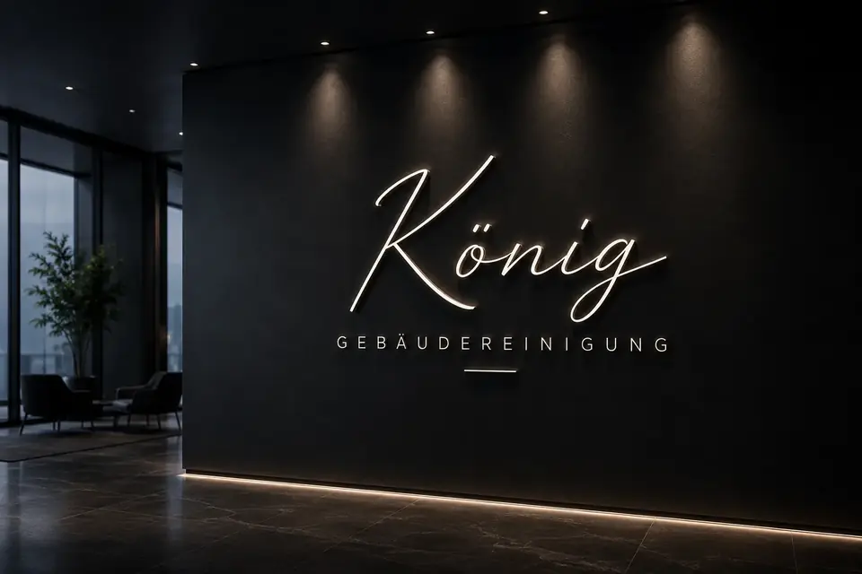

Ablauf
So läuft die Zusammenarbeit ab
Von der ersten Anfrage bis zur laufenden Reinigung in vier Schritten. Ohne Kleingedrucktes und mit einem Ansprechpartner von Anfang an.
Vier Schritte bis zur sauberen Lösung
Anfrage
Sie schildern uns per Formular, E-Mail oder Telefon, um welches Objekt es geht und was gereinigt werden soll. Ein paar Stichworte genügen: Art der Räume, ungefähre Größe und wie oft Sie sich eine Reinigung vorstellen. Fehlt etwas, fragen wir nach.
Objekt besprechen
Wir klären Fläche, Räume, Bodenbeläge, Besonderheiten und die Zeiten, zu denen gereinigt werden kann. Bei regelmäßigen Reinigungen ist es oft sinnvoll, das Objekt gemeinsam anzusehen. Bei einmaligen Einsätzen reichen manchmal schon einige Fotos.
Angebot
Sie erhalten ein schriftliches Angebot. Darin steht, welche Leistungen in welchem Rhythmus erbracht werden und was das kostet. Sie entscheiden in Ruhe, ob Sie das Angebot annehmen.
Start
Nach Ihrer Zusage legen wir den ersten Termin fest und regeln den Zugang zum Objekt. Danach wird nach dem vereinbarten Plan gereinigt, und Sie haben für alle Fragen denselben Ansprechpartner.
Was Sie für die Anfrage vorbereiten können
Je mehr wir über Ihr Objekt wissen, desto genauer wird das Angebot. Sie müssen dafür nichts ausmessen. Ungefähre Angaben reichen für den Anfang, den Rest klären wir im Gespräch.
Hilfreich sind auch Ihre Erfahrungen mit der bisherigen Reinigung: Was hat gut funktioniert, was hat Sie gestört? Daraus lässt sich viel für den neuen Reinigungsplan ableiten.
- Art des Objekts, zum Beispiel Büro, Praxis oder Wohnhaus
- Ungefähre Fläche oder Anzahl der Räume und Etagen
- Bodenbeläge und Anzahl der Sanitärräume
- Gewünschter Rhythmus und mögliche Uhrzeiten
- Besonderheiten wie Zugang, Schlüssel oder Parkmöglichkeiten
Was in Ihrem Angebot steht
Ein Angebot für die Gebäudereinigung sollte so klar sein, dass Sie es ohne Rückfragen verstehen. Deshalb beschreibt unser Angebot, welche Räume und Flächen gereinigt werden, welche Aufgaben bei jedem Termin anfallen und welche in größeren Abständen. Dazu kommen der Rhythmus, die geplanten Zeiten und der Preis.
Bei regelmäßigen Reinigungen gehören auch Laufzeit und Kündigungsfrist dazu sowie die Frage, wer Verbrauchsmaterial wie Seife und Papier stellt. Bei einmaligen Einsätzen steht der genaue Umfang im Mittelpunkt, damit am Ende kein Missverständnis darüber entsteht, was zur Leistung gehört.
Prüfen Sie das Angebot in Ruhe und sprechen Sie uns an, wenn Ihnen etwas fehlt oder zu viel ist. Änderungen sind an dieser Stelle einfach und vermeiden spätere Diskussionen.
Wenn Sie bisher mit einem anderen Reinigungsdienst gearbeitet haben, legen Sie das alte Leistungsverzeichnis gern daneben. Dann sehen Sie auf einen Blick, wo sich die Angebote unterscheiden. Achten Sie dabei weniger auf einzelne Formulierungen als darauf, ob alle Räume und Aufgaben vorkommen, die Ihnen wichtig sind, und ob die Häufigkeit zu Ihrem Alltag passt. Ein günstiger Preis nützt wenig, wenn wichtige Aufgaben fehlen.
Wenn die Reinigung läuft
Ein Reinigungsplan ist kein starres Dokument. Wächst Ihr Team, wird ein Raum umgebaut oder steht eine Veranstaltung an, passen wir den Plan an. Kurze Wege sind der Vorteil eines inhabergeführten Betriebs: Sie rufen an, und die Sache wird geklärt.
Fällt Ihnen etwas auf, das nicht so ist, wie es sein soll, sagen Sie uns bitte direkt Bescheid. Rückmeldungen helfen uns, die Reinigung für Ihr Objekt weiter zu verbessern.
